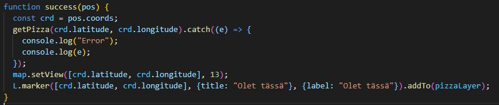

Etusivu esittelylle
Ryhmä 10 ja Pizzanyt
Pizzanyt on sovellus joka vastaa kaikkien epätavalliseen aikaan syövien tarpeisiin. Sovellus näyttää kätevästi mitkä pizzeriat ovat auki alueellasi ja sovelluksen kautta saat reittiohjeet kyseiseen ravintolaan.
Sivu sisältää responsiivisen kartan sekä hakukentän josta voit hakea lempiravintolaasi. Data tulee sivulle Myhelsinki.apin kautta ja kartta tulee Openstreetmaps:ilta
Pizzanyt tekijät:
Javascript
getPizza();
Sivumme markkerit kartalle laittaa paikoilleen getPizza function, joka hakee datan myhelsinki apista ja litteroi sen.
Jos pizzapaikka on auki litteroidun tiedon perusteella niin se asetetaan layerille pizzaAuki, muulloin se asetetaan pizzaKiinni layerille
Markkerin popupin ominaisuudet
Reittihaku toteuttaa function haeReitti joka hakee hsl apin avulla reitin.
Tämän jälkeen se muuttaa reitin polylineiksi ja
luo markkerit reitille.

Kartan alakulmaan tulee oma ikkuna josta näkee lisätietoja matkasta.
Searchbarilla voi etsiä oman suosikki pizzeeriasi nimen